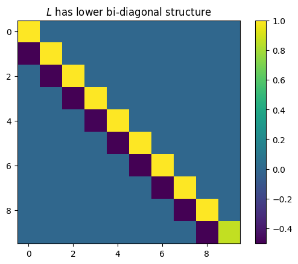
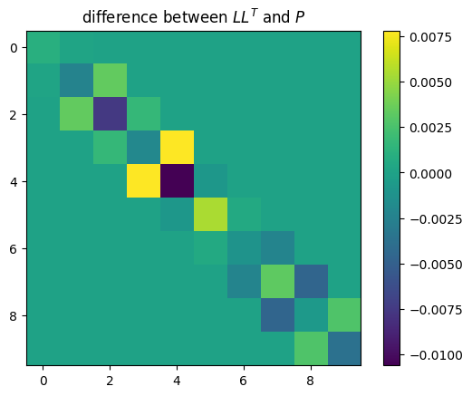

a = 1 / 2
s2 = 1.0
n = 10
# stationary
tau2 = s2 / (1 - a**2)
cov = jnp.array([[tau2 * a ** (jnp.abs(i - j)) for j in range(n)] for i in range(n)])Cross-Entropy method
See also the corresponding section in my thesis
The cross entropy method [@Rubinstein1997Optimization;@Rubinstein2004CrossEntropy] is a method for determining good importance sampling proposals. Given a parametric family of proposals \(g_\theta(x)\) and target \(p(x)\), the Cross-Entropy method aims at choosing \(\theta\) such that the Cross Entropy \[ \mathcal H_{\text{CE}} \left( p \middle|\middle| g_{\theta} \right) = \int p(x) \log g_{\theta}(x) \mathrm d x \] is maximized. This is equivalent to minimizing the Kullback Leibler divergence between \(p\) and \(g_\theta\). As \(H_\text{CE}\) is not analytically available, it is approximated by importance sampling itself, usually with a suitable proposal \(g_{\hat\theta_0}\). Then the approximate optimization problem is solved, yielding \(\hat \theta_1\). These steps are then iterated until convergence, using common random numbers to ensure convergence.
Considering the Cross-Entropy method with a Gaussian proposal \(g_\theta\), we see that the optimal \(\theta\) only depends on the first and second order moments of \(p\), indeed the optimal Gaussian is the one that matches these moments. Unfortunately this approach is not feasible for the models we consider in this package as the dimensionality (\(n \cdot m\)) is likely too high to act on the joint distribution directly - matching means is feasible, but simulating from the distribution and evaluating the likelihood is infeasible. However, we can exploit the Markov structure of our models:
For the class of state space models treated in this package, it can be shown that the smoothing distribution, the target of our inference, \(p(x|y)\), is again a Markov process, see Chapter 5 in [@Chopin2020Introduction], so it makes sense to approximate this distribution with a Gaussian Markov process. For such a Gaussian Markov process it is known that the precision matrix \(P\) of the joint distribution is sparse, indeed it is a block-tri-diagonal matrix.
computation of Cholesky factor \(L\) of \(P\)
[@Schafer2021Sparse] show that the centered Gaussian Markov process (more generally any Gaussian distribution with given sparsity) which minimizes the Kullback-Leibler divergence to a centered Gaussian with specified covariance matrix has an analytically and numerically tractable Cholesky decomposition that can be computed fast. Using this Cholesky decomposition we are able to evaluate the likelihood and simulate from this distribution.
Consider states \(X_t\) consisting of \(m\) states \(X_{t,1}, \dots, X_{t, m}\). The \(i\)-th \(v_{i}\) column of the KL-optimal Cholesky decomposition corresponding to \(X_t\) can, by [@Schafer2021Sparse], be obtained by \[ v_{i} = \frac{1}{\lambda_{i}}\text{Cov} \left(X_{t,i}, \dots, X_{t,m}, X_{t+1, 1}, \dots, X_{t+1, m} \right)^{-1} e_{1} \] where \(\lambda_i\) is the square root of the first entry of the matrix vector product on the right-hand side and \(e_{1}\) is the first unit vector. If \(t=n\), then it suffices to replace above covariance with \(\text{Cov}\left(X_{t,i}, \dots, X_{t,m}\right)\). In our setup we replace the exact covariance by an importance sampling estimate with weights \(w^i\), \(i = 1, \dots, n\).
running example: AR(1) process
we’ll use the simples non-degenerate Gaussian Markov process as an example, an AR(1) process. We start this process in its stationary distribution.
N = 100000
initial_samples = MVN(jnp.zeros(n), cov).sample((N,), seed=jrn.PRNGKey(5324523423))[
..., None
]
initial_weights = jnp.ones(N)
initial_samples.shape
root_diag, root_off_diag = cholesky_components(initial_samples, initial_weights)
P = jnp.linalg.inv(cov)
L = jnp.diag(jnp.concatenate(root_diag)[:, 0]) + jnp.diag(
jnp.concatenate(root_off_diag)[:, 0], -1
)
plt.title("$L$ has lower bi-diagonal structure")
plt.imshow(L)
plt.colorbar()
plt.show()
plt.title("difference between $L L^T$ and $P$")
plt.imshow(L @ L.T - P)
plt.colorbar()
plt.show()
simulation using \(L\)
As \(LL^T = P = \Sigma^{-1}\), \(L^{-T}L^{-1} = \Sigma\) so to simulate \(X \sim \mathcal N(0, \Sigma)\) it suffices to simulate a standard normal \(Z \sim \mathcal N(0, I)\) and solve \(L^T X = Z\). Luckily, \(L^T\) is an upper block diagonal matrix which solving this system of equations straightforward. To this end we partition \(X = (X_1^{T}, \dots, X_n^{T})^{T}\) and \(Z = (Z_1^{T}, \dots, Z_n^{T})^{T}\) and \(L = \text{block-diag} \left( L_{1,1}, \dots, L_{n,n} \right) + \text{lower-block-off-diag} \left( L_{2,1}, \dots, L_{n, n-1} \right)\). Starting with \(X_n\), we solve \[ L_{n,n}^T X_{n} = Z_{n} \] by using the fact that \(L_{n,n}^T\) is an upper triangular matrix. We then iteratively solve for \(i = n-1, \dots, 1\) \[ L_{i,i}^TX_{i} + L_{i+1,i}^T X_{i + 1} = Z_{i}, \] so \[ X_{i} = L_{i,i}^{-T} \left( Z_{i} - L_{i +1, i}^{T} X_{i + 1} \right). \]
marginal distributions
Rewriting the above equations used for simulation, we see that
\[ X_{i} = A_{i + 1} X_{i + 1} + \varepsilon_{i} \]
with \(X_n \sim \mathcal N\left(0, L_{n,n}^{-T}L_{n,n}^{-1}\right)\), \(A_{i + 1} = -L_{i,i}^{-T}L_{i +1, i}^{T}\) and \(\varepsilon_{i} \sim \mathcal N\left(0, L_{i,i}^{-T}L_{i,i}^{-1}\right).\)
From these recursions we can caluclate the marginal covariances of \(X_i\) for all \(i\) by iteration.
L_true = jnp.linalg.cholesky(jnp.linalg.inv(cov)).T
_, marginal_var = marginals(jnp.zeros(n), root_diag, root_off_diag)
fct.test_close(marginal_var[0, 0], jnp.diag(cov), 0.01)Evaluating the density
Similar to simulation, we can evaluate the log-density \[ \log p(x) = - \frac{n\cdot m}{2} \log(2 \pi) - \frac{1}{2} \log \det \Sigma - \frac 1 2 (x - \mu)^{T} \Sigma^{-1}(x-\mu) \] efficiently using \(L\).
For the \(\log\det \Sigma\)-term notice that \(\Sigma = L^{-T}L^{-1}\) results in \(2 \log\det L = 2 \sum_{i = 1}^n \log\det L_{i,i}\). These determinants are simply the product of the diagonal entries, as \(L\) is a lower triangular matrix.
The quadratic part can be rewritten as \(\lVert L^T(x-\mu) \rVert^{2}\) and, using the structure of \(L^{T}\), this consists of terms of the form \(L^T_{i,i} (x_i - \mu_i) + L^T_{i+1, i}(x_{i + 1} - \mu_{i + 1})\).
Importance Sampling
For importance sampling with this model the log weights read \[ \log w(x) = \log p(x|y) - \log g(x) = \log p(x,y) - \log g(x) - \log p(y), \] where we ignore the \(\log p(y)\) term to obtain autonormailsed importance sampling weights.
SSM to Markov Model
To inititialize the Cross-Entropy method, we will use the Laplace approximation, see [30_laplace_approximation.ipynb]. This approximates the true posterior by the posterior of a Gaussian state space model. To initiailze the Cross-entropy procedure, we determine the Cholesky root of this Gaussian posterior and use it as an initial value. To determine the diagonal and off-diagonal components of the Cholesky root, we calcultae the joint covariance matrix \(\text{Cov} \left( X_t, X_{t + 1} | Y_1, \dots, Y_n \right)\) using the Kalman smoother and the FFBS, which results in \[ \text{Cov} \left( X_t, X_{t + 1} | Y_1, \dots, Y_n \right) = \begin{pmatrix} \Xi_{t|n} & \Xi_{t|t} A_t^T \Xi_{t + 1|t}^{-1} \Xi_{t + 1|n} \\ \left(\Xi_{t|t} A_t^T \Xi_{t + 1|t}^{-1} \Xi_{t + 1|n} \right)^T & \Xi_{t + 1 | n} \end{pmatrix}. \]
Then the algorithm by [@Schafer2021Sparse] allows us efficiently determine the desired cholesky root.
(1, 1)model = nb_pgssm_running_example()
# simulate from model
key = jrn.PRNGKey(51)
key, subkey = jrn.split(key)
N = 1
(x_true,), (y,) = simulate_pgssm(model, N, subkey)
# laplace approximation & importance sampling
s_init = jnp.log(y + 1.0)
x_smooth, z, Omega = laplace_approximation(y, model, s_init, 100)
la_glssm = GLSSM(model.x0, model.A, model.Sigma, model.B, Omega)N = 100000
key, subkey = jrn.split(key)
initial_samples, initial_log_weights = pgssm_importance_sampling(
y, model, z, Omega, N, subkey
)
initial_weights = jnp.exp(initial_log_weights - jnp.max(initial_log_weights))
ess_pct(initial_log_weights)initial_mean, (initial_diag, initial_off_diag) = forward_model_markov_process(
z, la_glssm
)
key, subkey = jrn.split(key)
components, (samples, log_weights), iterations = ce_cholesky_precision(
y, model, initial_mean, initial_diag, initial_off_diag, 10, N, subkey
)
ess_pct(log_weights)